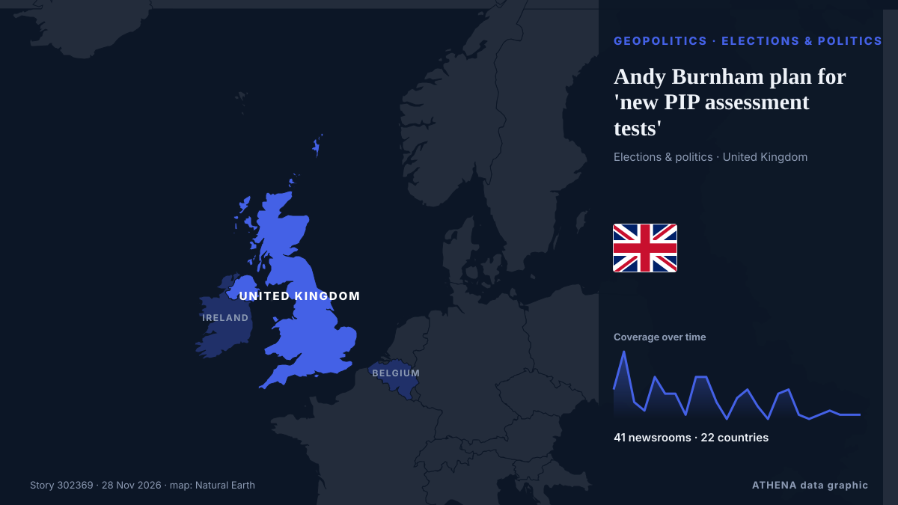

Géopolitique, politique et sécurité
SponsoriséPrésenté par  Cybernetics and Artificial Intelligence Lab Welcome to the Cybernetics and Artificial Intelligence Laboratory, established at the Department of Business Administration of the National and Kapodistrian University of Athens. The lab is headed by Professor Dimitrios Thomakos. The lab aims to do research that can be published in top venues. Our research uses tools and methods of Artificial Intelligence, and lies in the following areas: - Forecasting - Decision making - Cyber security - Finance We are always looking forward to collaborating with exceptional students!
Cybernetics and Artificial Intelligence Lab Welcome to the Cybernetics and Artificial Intelligence Laboratory, established at the Department of Business Administration of the National and Kapodistrian University of Athens. The lab is headed by Professor Dimitrios Thomakos. The lab aims to do research that can be published in top venues. Our research uses tools and methods of Artificial Intelligence, and lies in the following areas: - Forecasting - Decision making - Cyber security - Finance We are always looking forward to collaborating with exceptional students!
Les titres sont affichés en anglais, tels que publiés.

Élections et politiqueAndy Burnham plan for 'new PIP assessment tests'
A major overhaul of Personal Independence Payments is planned. de Birmingham Mail
| 15 nov. | 198 |
|---|---|
| 16 nov. | 276 |
| 17 nov. | 266 |
| 18 nov. | 250 |
| 19 nov. | 257 |
| 20 nov. | 231 |
| 21 nov. | 162 |
| 22 nov. | 154 |
| 23 nov. | 237 |
| 24 nov. | 208 |
| 25 nov. | 233 |
| 26 nov. | 208 |
| 27 nov. | 129 |
| 28 nov. | 4 |
Kuwait summons Iran ambassador over ‘continued Iranian attacks’
Kuwait’s foreign ministry summoned Iran’s ambassador in response to ongoing attacks, including a recent drone strike that resulted in fatalities. de Arab News
Trump says trade deal reached between the U.S. and the Philippines
President Donald Trump announced a trade deal had been reached between the U.S. and the Philippines during a banquet with Philippine President Ferdinand Marcos Jr. de NBC News (World)
Israel kills four in Gaza as Hamas chief al-Hayya’s son survives strike
Four of Khalil al-Hayya's other sons were previously killed by Israeli forces, according to the Palestinian group. de Al Jazeera English
Tanker with 7,000 tonnes of diesel capsized near Spain’s Ibiza island
Valencia, Spain (Ports Europe) November 28, 2026 – The Malta-flagged oil and chemical tanker Med Emre, carrying up to 7,000 tonnes of diesel, capsized on November 23 and remains partially submerged… de Ports Europe
Russian Kh-101 Missile That Crashed in Poland Was Built in Late 2026
The Russian Kh-101 cruise missile from which wreckage was recovered near the village of Nowy Lipowiec in Poland’s Lublin Voivodeship was manufactured in Russia in the fourth quarter of 2026 and… de Kyiv Post
Eleven civilians killed, 20 injured in Ukrainian attacks on Kherson Region over week
In particular, two civilians were killed in attacks on vehicles on the R-280 Highway. de TASS (English)
ZIM restarts Levant Black Sea Express without Alexandria call
ZIM has resumed its Levant Black Sea Express (LBX), restoring feeder links between Israel and the Black Sea ports of Constanta and Varna. de Container News
Trump urges Putin to end 'military aggression' in Europe
WEST PALM BEACH: US President Donald Trump said Thursday he had asked Vladimir Putin to “pull back all military aggression” against Europe, in a shift in tone towards the leader Russian he called his… de Business Recorder
Parliamentary polls: New Zealand PM Luxon loses majority
The prime minister's coalition with the populist NZ First and the libertarian ACT was left one seat short of a majority, plunging the country into political uncertainty. de Free Malaysia Today
With US midterms underway, courts rebuff Trump's pressure on state election officials
Nov 3 - In the hours before polls opened for the US midterm elections on Tuesday, federal judges issued a series of rulings restricting the Trump administration's unprecedented efforts to pressure… de The Straits Times
Saudi Arabia, Pakistan, Türkiye open Makkah defense pact talks in Islamabad
ISLAMABAD: Pakistan, Saudi Arabia and Türkiye opened talks in Islamabad on Friday on how to implement their Makkah defense pact, a Pakistani Foreign Office official confirmed to Arab News. de Arab News
Levski fans hurt amid violence in Marseille
Levski Sofia coach Julio Velazquez condemned the violent clashes between fans of Levski Sofia and Marseille ahead of their Europa League game, calling them ‘unacceptable for football.’ The incidents… de Arab News
Russian drone attack damages two educational facilities in Kremenchuk, injuring two children
Two educational facilities were damaged and two children injured in a Russian drone attack on Kremenchuk, Poltava region. de Ukrinform (English)
Sudan rebels claim hundreds killed as they capture strategic military camp near Damazin
Sudan's Tasis forces claimed that hundreds were killed or wounded as they captured Maqanza military camp in Blue Nile, advancing towards Damazin. de Tuko
Mecca pact allies condemn ‘heinous’ Houthi attacks on Saudi Arabia
Officials from Pakistan, Saudi Arabia and Turkiye pledge to protect the kingdom's security during talks in Islamabad. de Al Jazeera English
Ukraine says Benghazi drone attack not directed against Libya
Ukrainian Foreign Minister Andrii Sybiha said on Thursday that Kyiv's targeting of Russian ships in Benghazi was not directed at Libya itself. de The New Arab
Saudi-led coalition destroys 50 Iran-Backed Houthi military targets in Yemen
RIYADH, Nov 26: The Saudi-led coalition announced that it had carried out a precision military operation targeting the capabilities of Yemen's Houthi militia, destroying 50 militar... de Arab Times
Sanchez makes last bid to beat the right ahead of Spanish vote
Spain’s Prime Minister Pedro Sanchez aims to defy expectations before the upcoming election anticipated to favor conservatives and the far right. de Arab News
Turkey, Saudi Arabia and Pakistan to discuss Yemen war
The foreign and defense ministers of Turkey, Saudi Arabia and Pakistan will discuss Saudi Arabia’s conflict with Iran-backed Houthi fighters in Yemen when they meet in Islamabad this week, Pakistani… de Turkish Minute
UK tells 100,000 military reservists to prepare for possible war call-up: Report
Letters offer volunteers training and exercises as Britain seeks to bolster defence readiness. de Express Tribune
Iran denies responsibility for Kuwait drone strike that killed two Italians
Iran's Foreign Minister Abbas Araghchi called the accusations baseless and the incident "suspicious" and offered to cooperate on a joint investigation. de Euronews English
Trump on ’60 Minutes’ Reflects on Midterm Loss, Death and Forgiveness: ‘I Do Hate Some of My Enemies’
President Trump told “60 Minutes” that he blames Republican candidates and the war in Iran for the party’s midterm defeat, and acknowledged that his mass deportation policy was “too tough.” Sitting… de Variety
North Korea seeks closure of Swiss office in Pyongyang over sanctions
North Korea on Wednesday sought the closure of a Swiss diplomatic office in Pyongyang and urged its head to leave the country withi. de Mainichi (English)
France and Germany want deal by year-end to ‘Le Pen-proof’ next EU budget, Ukraine
BRUSSELS, Nov 26 (Reuters) - France and Germany want the European Union to reach a deal in the next month on its 2028-2034 budget and financing for Ukraine ahead of a slew of elections across the… de Daily Maverick
Armenia plans full withdrawal of Russian border guards in coming years, prime minister says
Russian border guards, operating under Russia's Federal Security Service (FSB), have helped protect Armenia's borders with Turkey and Iran under a bilateral agreement signed in 1992. de Kyiv Independent
Trump, NATO chief urge Russia not to expand war in Ukraine
President Trump and NATO Secretary General Mark Rutte urged Russia not to expand its war with Ukraine, as peace talks between the countries have made little headway in recent weeks and as the… de The Hill
Iran denies involvement after 2 Italian technicians killed in attack on Kuwait site
Two Italians were killed in a drone attack in Kuwait on Thursday that Italy and Kuwait blamed on Iran, although Tehran has denied any involvement. de CBC News (alternative feed)
‘What pressure?’: Salahuddin on Hasina’s reported plan to return on December 16
Minister terms ex-PM 'fugitive terrorist', says she can only return by extradition in handcuffs, under surveillance. de Express Tribune
Israeli lawmakers advance 7 October inquiry opposed by Netanyahu
65 members voted in favour of the commission bill put forward by a lawmaker from Eisenkot's party, with 50 against. de The New Arab
Israeli Strike Kills Hamas Security Official, Family In Gaza
Medics said an Israeli airstrike hit an apartment in Deir Al-Balah in the central Gaza Strip on Thursday, killing Khaled Abu Nada, the deputy Gaza education minister, and his wife. de NDTV World
UN Warns of Growing Risk of Atrocities by Israel Against Palestinians
The United Nations has issued a warning about the increasing risk of atrocity crimes by Israel against Palestinians, highlighting the situation in the West Bank and Gaza Strip. de Arab News
One of Ireland's largest extras agencies is ending operations in the Republic over new rules
The Extras Department is based in Belfast but operates across Ireland. de TheJournal.ie
Israeli defense minister: Iran developing chemical weapons
Israeli Defense Minister Israel Katz said on Tuesday that Iran is developing chemical weapons and that Israel and the United States have known about Tehran’s efforts for some time, Israeli media… de JNS